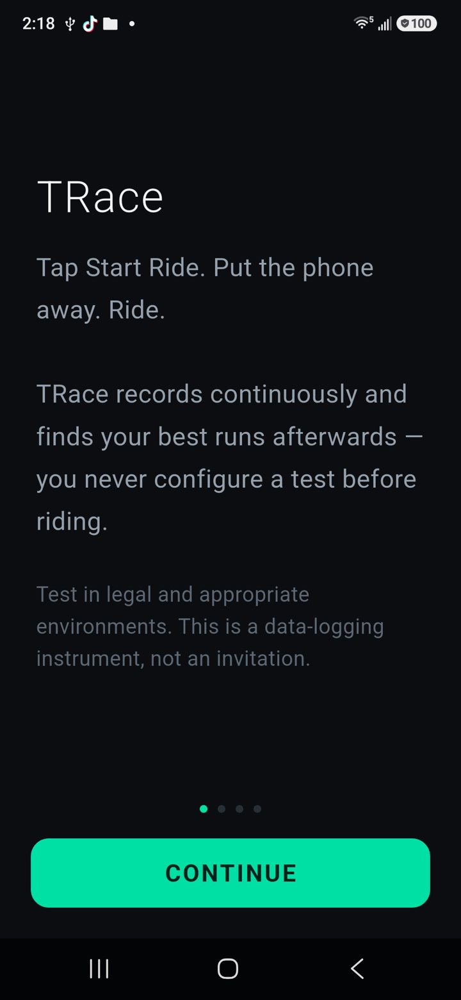
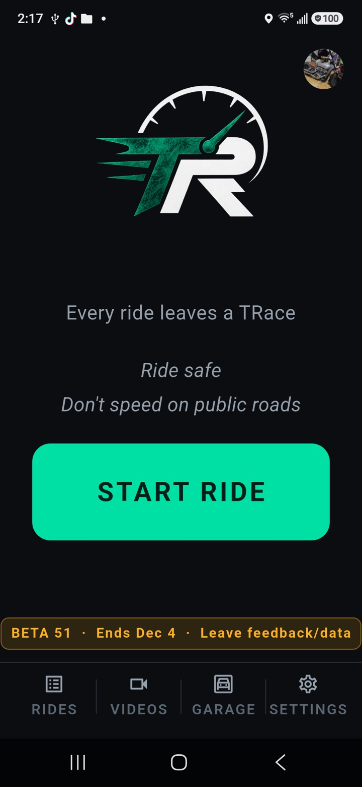
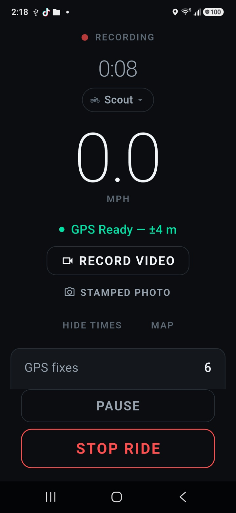
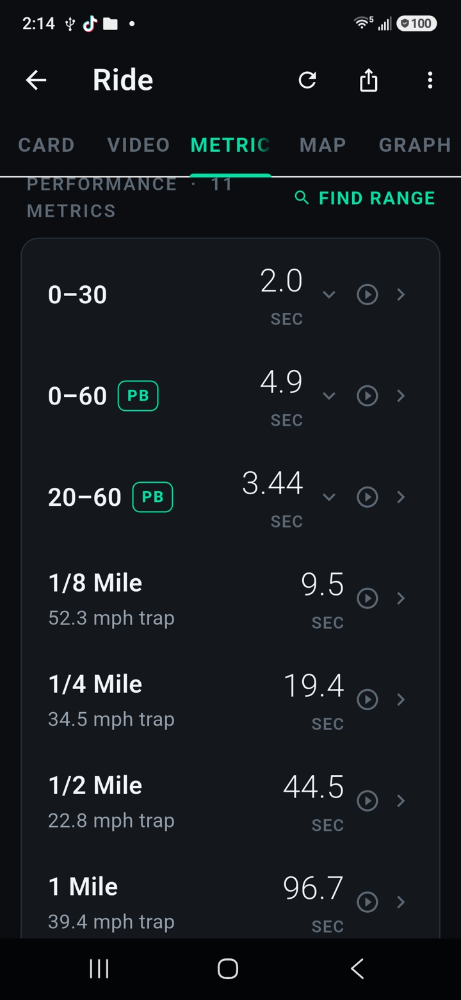
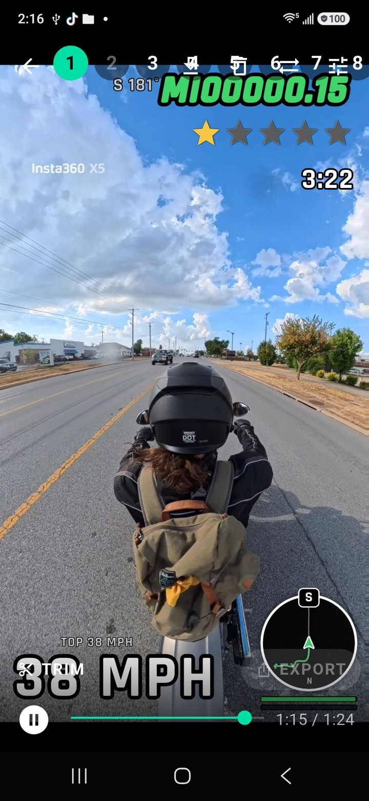
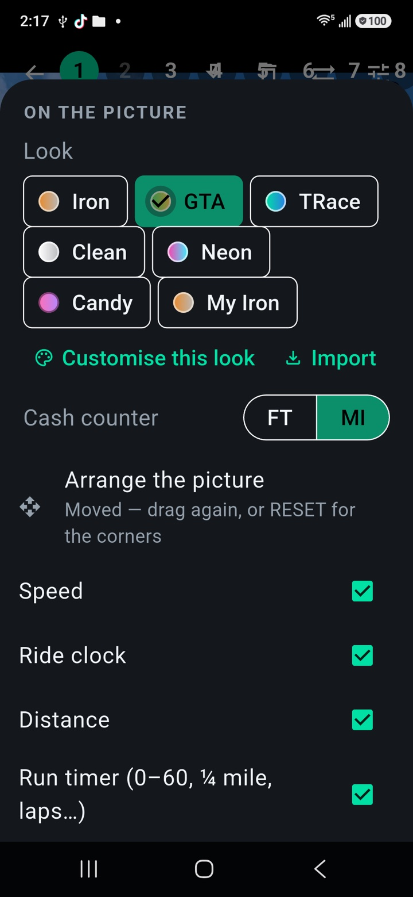
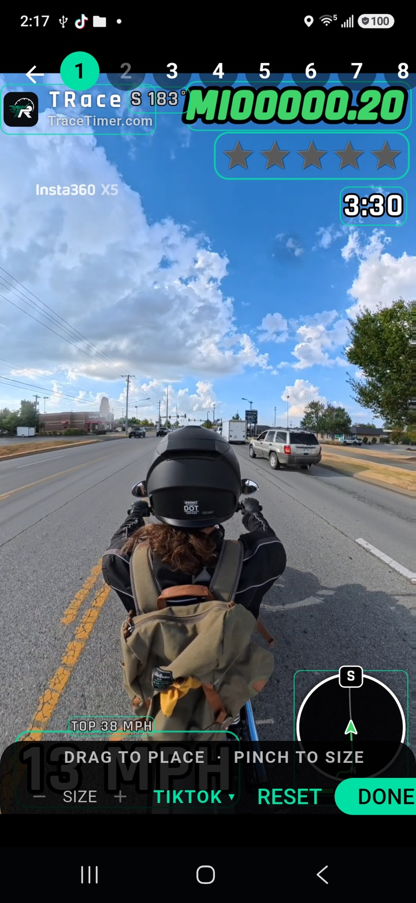
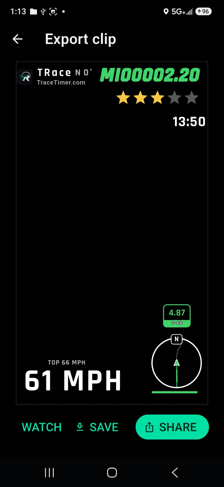
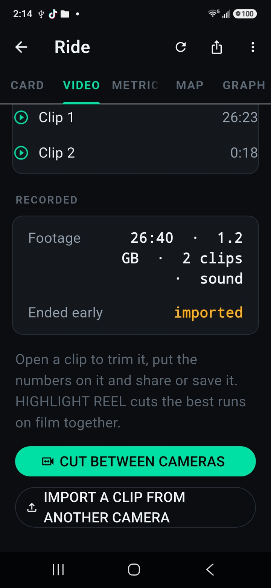
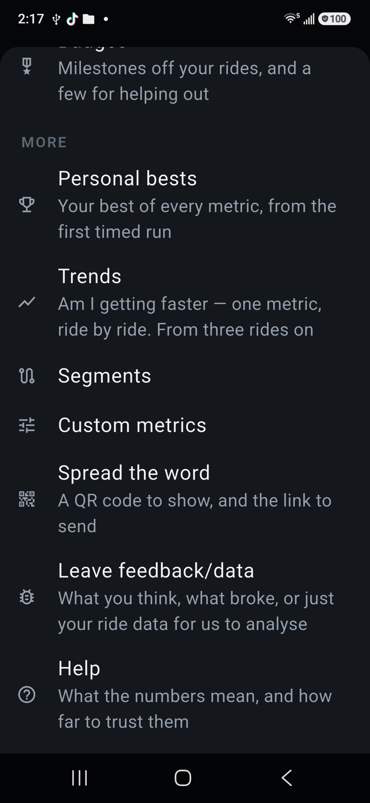

Getting started
From the first ride to a clip with the numbers on it. Ten steps; the pictures are the real screens. The same guide is in the app under Settings → Getting started.
- 1. Get it on your phone
- 2. Start a ride
- 3. While you ride
- 4. Your times
- 5. Watch a run on film
- 6. Pick a look
- 7. Arrange the picture
- 8. Export and share
- 9. A clip from another camera
- 10. Tell us what you saw

Get it on your phone
Android testers: the download on tracetimer.com installs straight from the browser. Allow installs from that source once when the phone asks; later builds install over it and keep your rides.
Google Play testers: join the tester group and take the opt-in link with the same Google account your phone is signed into, or Play says the app is not available.
Open the app and give it Location. Camera and Microphone are only asked for the first time you record video.

Start a ride
Mount the phone where it can see the sky and will not move. Turn Battery Saver off — it throttles the GPS, and a ride with silent gaps is worse than no ride.
Tap START RIDE. The app records GPS once a second and the motion sensors two hundred times a second, all on the phone. Nothing is uploaded anywhere.

While you ride
The big number is your speed; the ride clock and distance sit under it. PAUSE at a fuel stop, STOP when you are done.
RECORD VIDEO starts the camera for this ride: a minute of viewfinder to aim the phone, then the screen goes dark to keep it cool. The red REC pill shows the clip rolling; tap it to see the camera again. Heat ends a clip, never the ride — RECORD AGAIN starts a new one once the phone has cooled.

Your times
STOP, and the ride opens on METRICS: every standing start and rolling window the analysis found — 0–60, the quarter mile, 20–60, your own custom ones — each with a confidence word beside it. A run that is missing was not measured, never guessed.
MAP shows the route with each run lit along it. GRAPH is the speed trace. Tap any run for its detail.

Watch a run on film
Tap a run's time and its clip opens cut to that run, three seconds either side. The numbers sit over the picture: speed, ride clock, distance, heading, the run counting up on its own card, and a mini map that follows you with your heading up.
The VIDEOS tab holds every clip from every ride.

Pick a look
The sliders icon opens WHAT TO SHOW: which numbers, which runs, and the LOOK — Iron, GTA, TRace, Clean, Neon, Candy.
CUSTOMISE opens the editor over the picture, so every change shows on the clip as you make it: the layout, the lettering, seven colours, corners, rim, outline, glow. SAVE keeps it under a name of your own. The share icon sends it as a small file; a friend adds it with IMPORT.

Arrange the picture
ARRANGE THE PICTURE lets you drag every block where you want it and pinch to size it — the mark included, though it never goes smaller than 70% or off.
FIT puts everything clear of the bars YouTube Shorts, Instagram Reels or TikTok draw over a video, in one tap. Save as My layout keeps your own arrangement; RESET puts the corners back. Portrait and landscape clips each keep their own.

Export and share
TRIM sets the ends of the clip; USE THIS RUN cuts it to the run on the playhead. EXPORT burns the numbers into the picture, sound included, with the TRace mark on it.
When it is done: WATCH it, SAVE it to the phone's gallery, or SHARE it straight to wherever it is going.

A clip from another camera
A GoPro or Insta360 clip goes in from the ride's VIDEO tab: IMPORT A CLIP FROM ANOTHER CAMERA. A GoPro file lines itself up on its own GPS.
An Insta360 export carries no clock, so tap ATTACH… and pick the original .insv, or its small .lrv proxy — the app finds where the export sits by its sound and its motion. If the speedo looks a frame out, ALIGN nudges it and SAVE keeps it.

Tell us what you saw
Settings → Leave feedback/data writes an email with the app version, your phone and, if you leave the switch on, the ride's recording — so we see what you saw. A RaceBox or Dragy file from the same ride, attached to that email, is the most useful thing a tester can send.
Storage exports the whole record as one archive. Do it after any ride worth keeping: the phone is the only copy.
Stuck, or something read wrong? Support has the answers to the common questions, and the address that reaches us.
Support